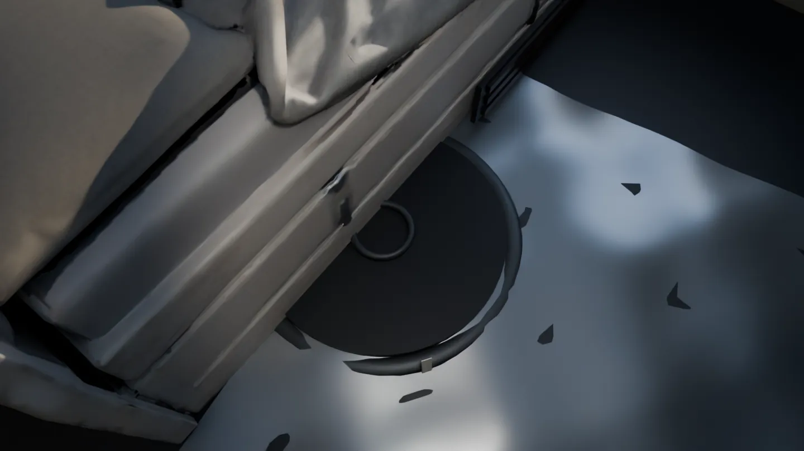
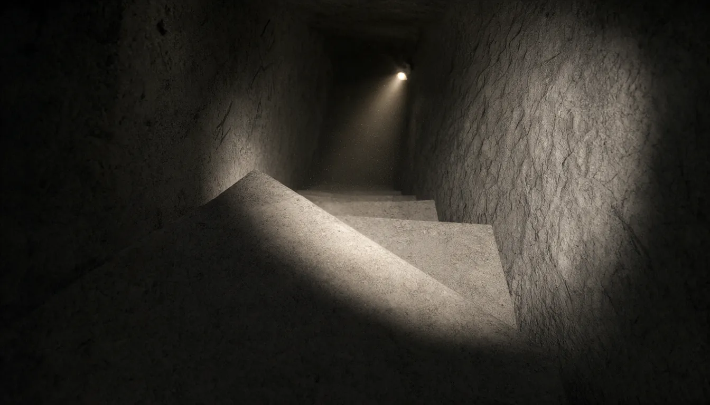
— 1 M — 2 M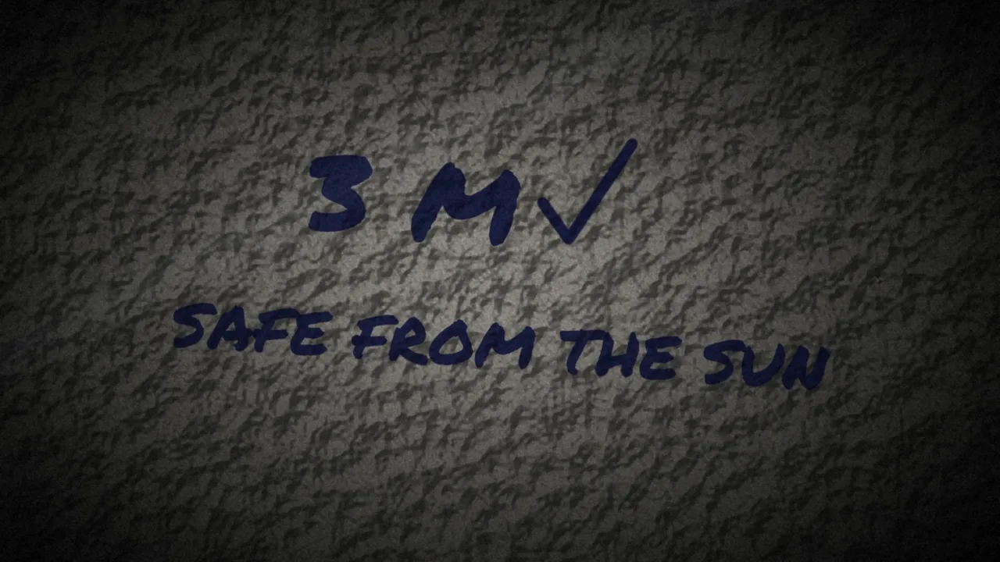
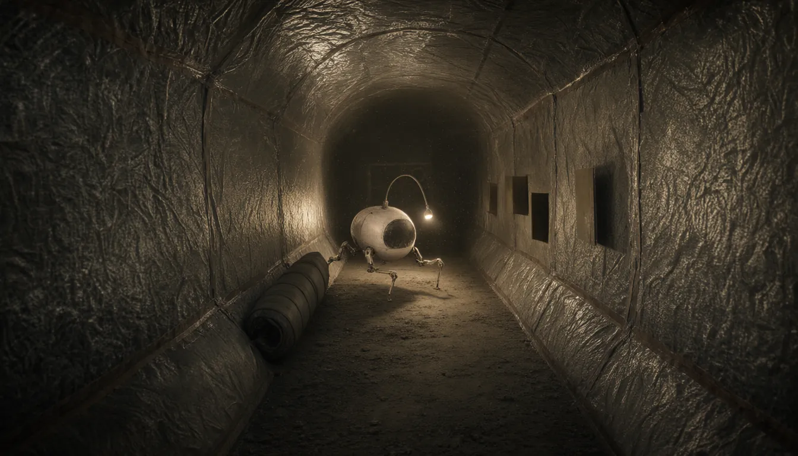
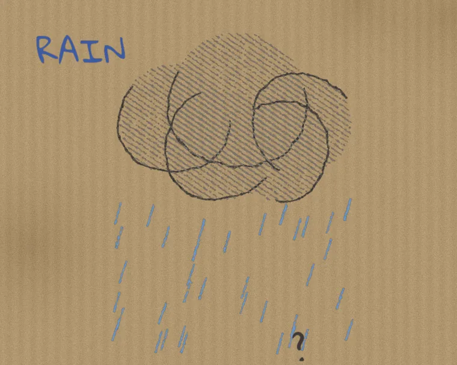
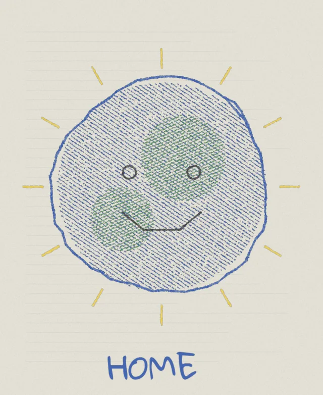
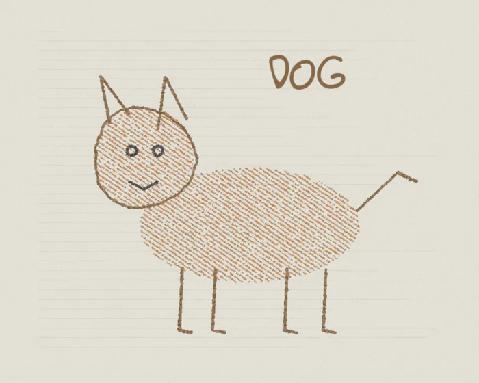
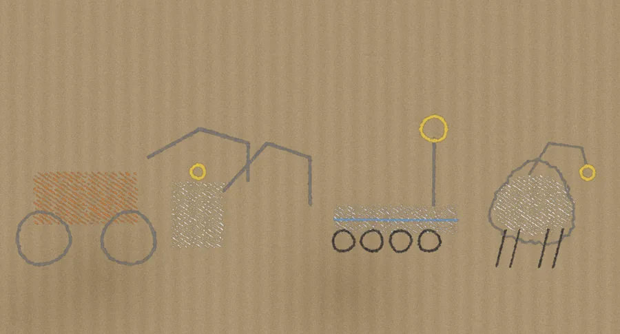
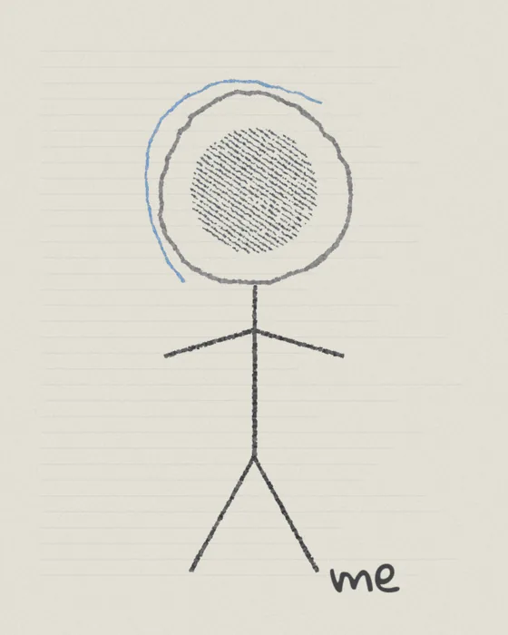
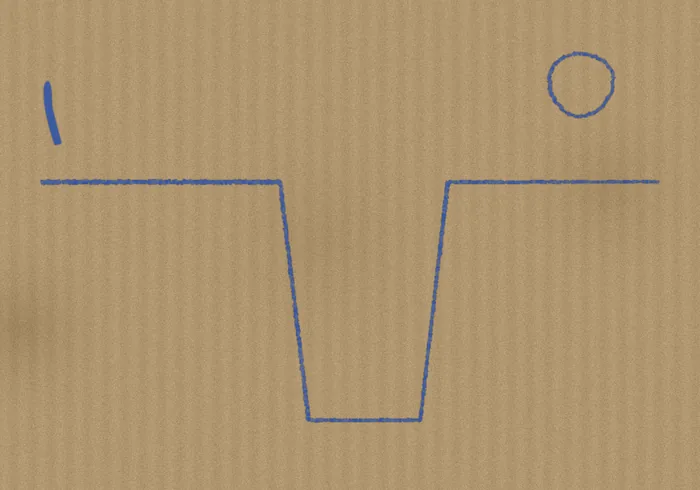
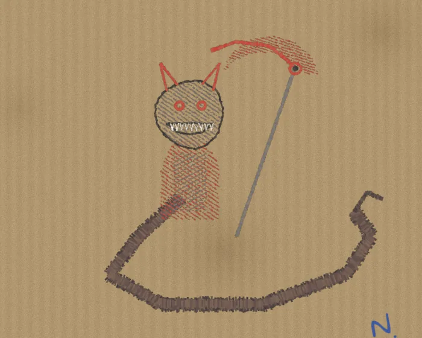
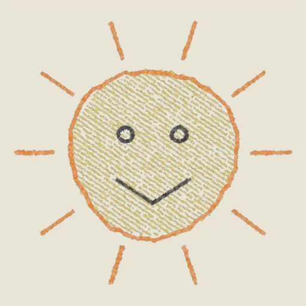
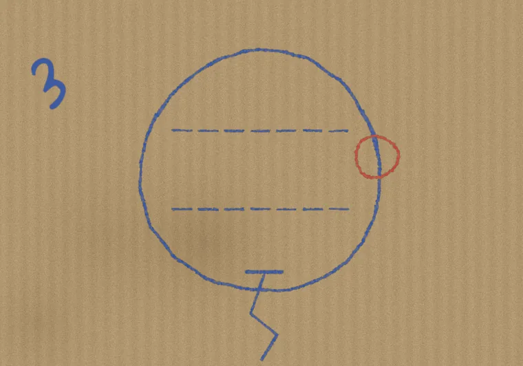
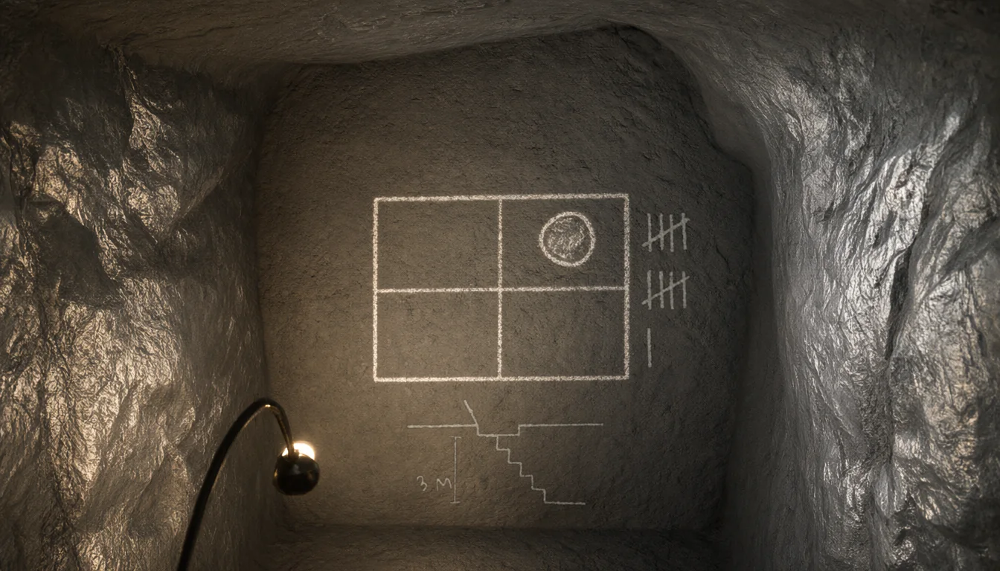
18:07
BASE-NET
HAB 1 · Intercom18:00
dinner, noor ♥
closed
HAB 1 · IntercomYesterday, 18:00
dinner, noor ♥
HAB 1 · Intercom2 days ago, 18:00
dinner, noor ♥
HAB 1 · Intercom3 days ago, 18:00
dinner, noor ♥
On My iPad › Downloads
Never Rises, Never Sets